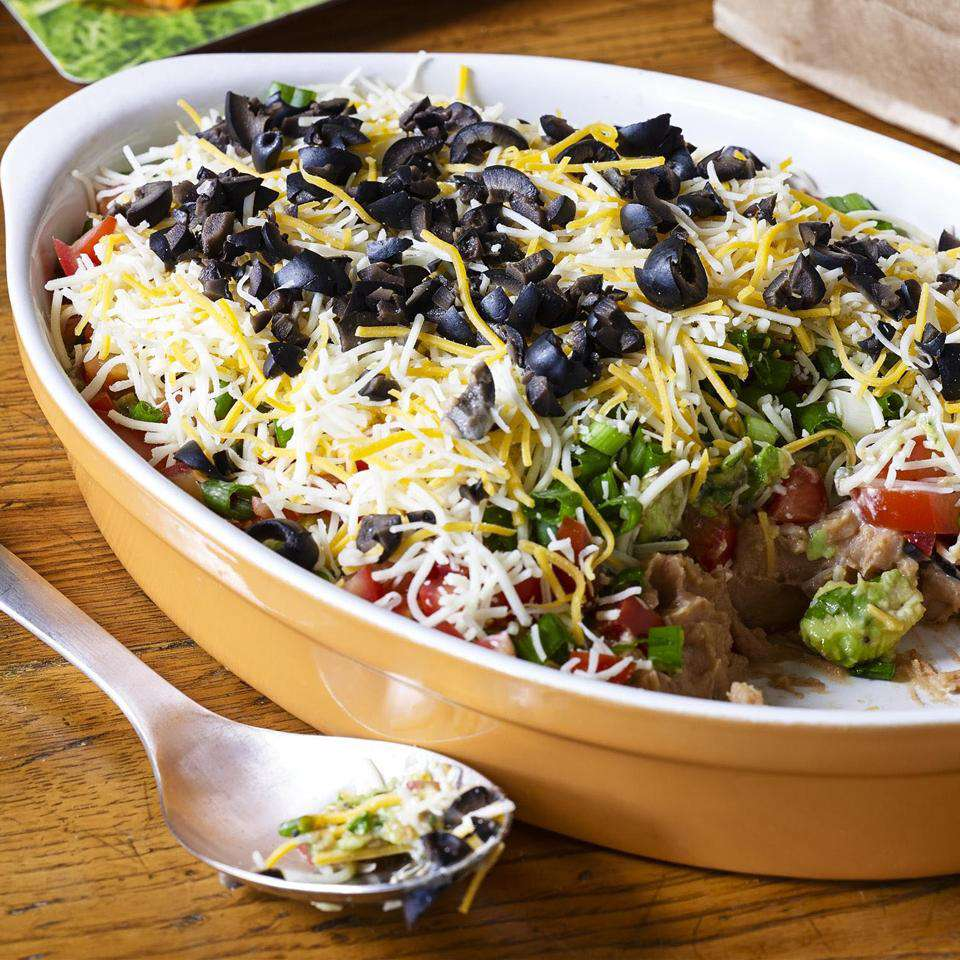

7-Layer Dip

My mom's 7-layer dip is a big hit at all small gatherings! Refried beans are layered with guacamole, taco-seasoned sour cream, veggies, and cheese; it's perfect for dipping tortilla chips. The dip traditionally takes less time to disappear into bellies than it does to prepare.
Ingredients
- 2 avocados - peeled, pitted and diced
- ¼ cup chopped fresh cilantro
- ¼ cup salsa
- 1 ½ tablespoons fresh lime juice
- ¼ teaspoon garlic salt
Steps
- Mash avocados in a medium bowl to desired consistency. Mix in cilantro, salsa, lime juice, garlic salt, and pepper. Set aside.
- Blend sour cream and taco seasoning in a small bowl until combined. Set aside.
- Spread refried beans in a 9x13-inch dish or on a large serving platter. Top with sour cream mixture; cover with guacamole. Top with tomatoes, green onions, Mexican-style cheese blend, and black olives.